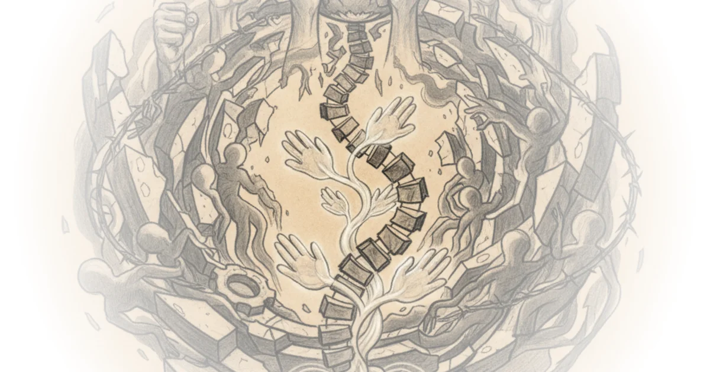
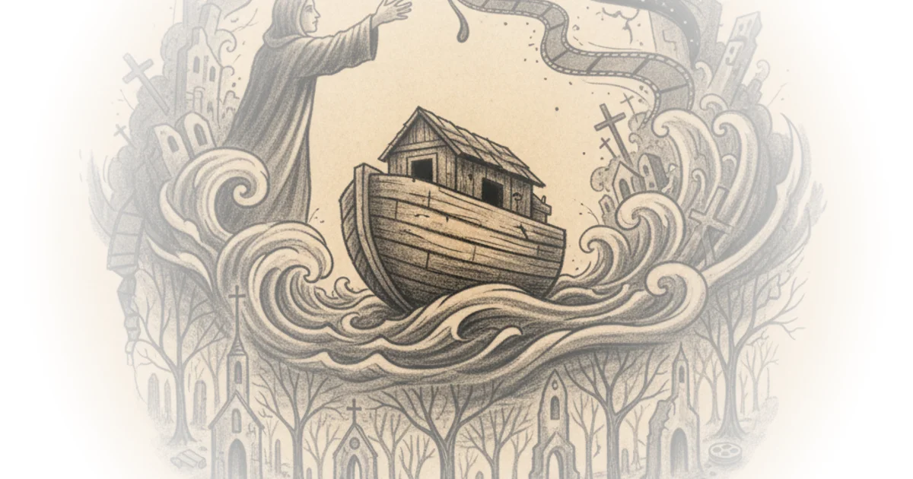
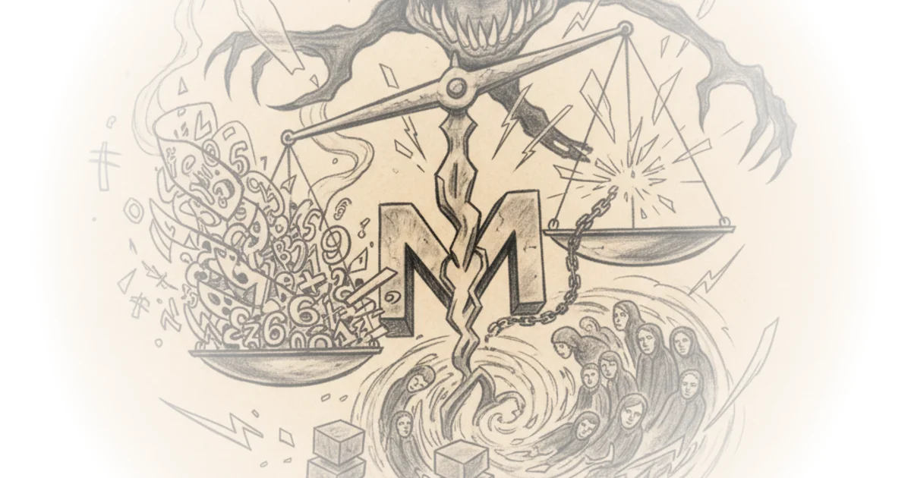

This is Hollywood's Liberal Fantasy, and it's Falling Apart Tom van der Linden · Like Stories of Old ·Jun 28, 2025 · 27 min read · Political Strategy
Somatic Abolitionism as Possibility for Rethinking Teachers’ Labor Activism Various · Future Schools ·Jun 26, 2025 · 10 min read · AI & Tech 
The one true philosophical theory of names Jeffrey Kaplan · Jeffrey Kaplan ·Jun 26, 2025 · 24 min read · Philosophy
092: Maternal desire: The missing element of mental health for mothers Various · Two Truths ·Jun 24, 2025 · 11 min read · Public Health
Religion, nihilism, faith, and the movies Matthew Clayfield · ·Jun 23, 2025 · 19 min read · Philosophy 
The Postmodern Case of Charlie Kirk Rafael Holmberg · Antagonisms of the Everyday ·Jun 22, 2025 · 10 min read · Philosophy
Expanding Cultures of Solidarity in Red State Teachers Unions Various · Future Schools ·Jun 19, 2025 · 17 min read · AI & Tech
An Interview with Gheorghe Zamfir, Master of the Pan Flute and Film Soundtrack Hero Scott Tobias & Keith Phipps · The Reveal ·Jun 18, 2025 · 15 min read · Media
How Generative AI Can Rot Your Brain Natalie Wexler · Natalie Wexler ·Jun 17, 2025 · 10 min read · AI & Tech
#59: ‘Sans Soleil’: The Reveal discusses all 100 of Sight & Sound’s Greatest Films of All Time Scott Tobias & Keith Phipps · The Reveal ·Jun 17, 2025 · 17 min read · Media
#52: How I Research a Novel, in the Stacks and in the World Matt Bell · Matt Bell ·Jun 11, 2025 · 20 min read · Writing & Craft
Marx in the Shadow of Marxism Rafael Holmberg · Antagonisms of the Everyday ·Jun 3, 2025 · 11 min read · Philosophy
Lies, Damned Lies, and Statistics: Meta's Case-in-Chief Draws Sharp Words Brendan Benedict · ·Jun 1, 2025 · 31 min read 
The AI Cultural Slop Apocalypse is Here Then & Now · Then & Now ·May 29, 2025 · 22 min read · AI & Tech
Why gen-Z men are turning far right and women far left Joeri Schasfoort · Money & Macro ·May 29, 2025 · 13 min read · Political Strategy
️ Controversies in AI and Education Johnny Chang · AI x Education ·May 28, 2025 · 11 min read · AI & Tech
I Went to Cannes to See 2025’s Most Promising Movies Tom van der Linden · Like Stories of Old ·May 27, 2025 · 17 min read
#60 (tie): ‘Daughters of the Dust’: The Reveal discusses all 100 of Sight & Sound’s Greatest Films… Scott Tobias & Keith Phipps · The Reveal ·May 27, 2025 · 18 min read · Media